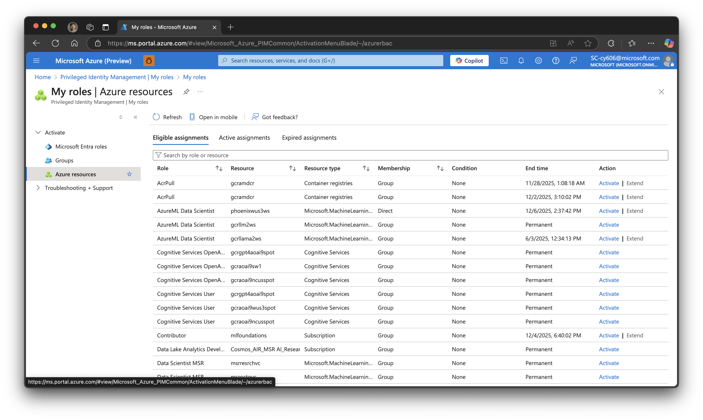
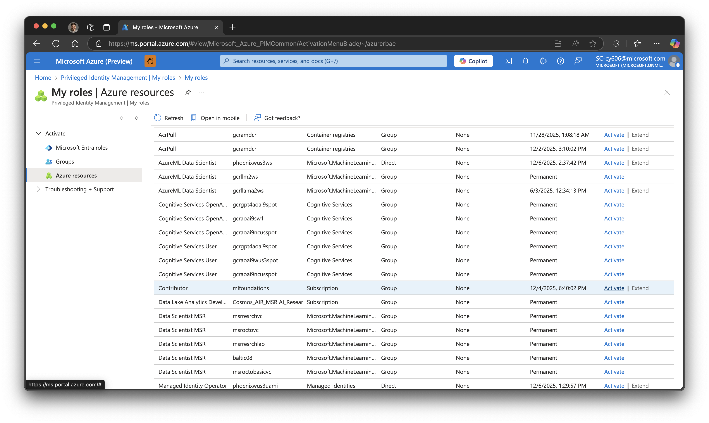
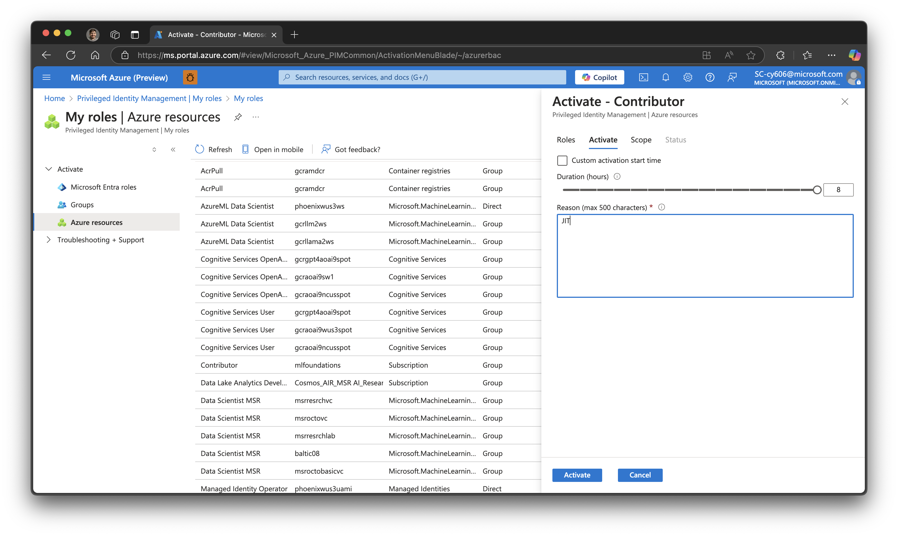
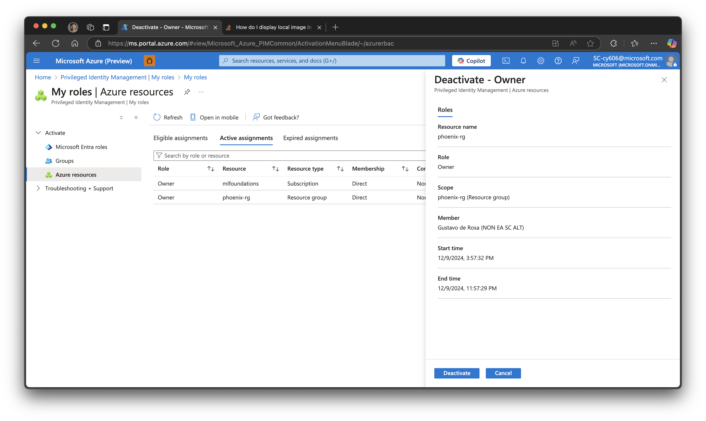

Elevate permissions with Privileged Identity Management (PIM)#
To manage subscriptions and create resources securely, you need to elevate your SC-ALT account permissions using PIM. This guide walks you through the steps to activate an eligible role and manage your permissions.
The topics in this guide were summarized according to the official documentation provided by Microsoft and we recommend reading them before proceeding:
Search for your subscription#
Within the PIM interface, find the My Roles section.

Click Azure Resources to view your eligible assignments.
Locate the subscription where you need access and click Activate on the eligible role record for the desired subscription or resource.

Fill out the activation form#
Validate the information: Check that the role, member account, and scope are correct.
Set activation details:
Use the slider to select the required duration.
If needed, specify a custom activation start time by selecting the Custom activation start time checkbox.
Provide a justification: Enter a meaningful and valid reason for activating the role.
Click Activate.

Processing and browser refresh#
After clicking Activate, your request will be processed.
Once the process completes, your browser will refresh automatically. No need to sign out and back in.
Validate role assignment#
Navigate to the Active Assignments tab in PIM.
Check the following details:
Role: Ensure it matches the one you activated.
Resource: Confirm the subscription or resource group.
State: Should display Activated.
End Time: Review the expiration of the active assignment.
Deactivating a role#
If you no longer require elevated access, navigate to the Active Assignments tab.
Select the active role and click Deactivate.

Review assignments#
In addition to your active roles, you can check the following tabs:
Eligible Assignments: Roles available for future activation.
Expired Assignments: Roles you previously activated but have since expired.
Additional resources#
This guide ensures you can securely elevate permissions using your SC-ALT account and manage your assignments effectively.